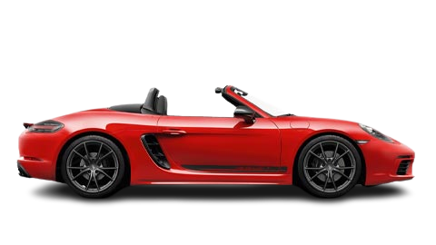

Panamera 4 E-Hybrid
Taycan Turbo S
911 Sport Classic
911 GT3

|
Panamera 4 E-Hybrid |
Taycan Turbo S |
911 Sport Classic |
911 GT3 |
|
A Porsche Panamera E-Hybrid oferece o equilíbrio perfeito entre eficiência energética e desempenho emocionante.O Panamera E-Hybrid é um veículo elétrico híbrido plug-in (PHEV) oferecido pela Porsche, especificamente na linha Panamera. Ele combina um motor de combustão interna convencional com um motor elétrico e uma bateria recarregável, proporcionando os benefícios da energia elétrica e da gasolina. O Panamera E-Hybrid oferece maior eficiência de combustível e emissões reduzidas em comparação com seus equivalentes não híbridos. Ele permite que você dirija em modo totalmente elétrico por distâncias curtas, proporcionando uma experiência de condução silenciosa e livre de emissões. Quando a carga da bateria está esgotada ou quando mais potência é necessária, o motor de combustão interna entra em funcionamento de forma transparente para fornecer propulsão adicional. As especificações e recursos específicos do Panamera E-Hybrid podem variar dependendo do ano do modelo e do nível de acabamento. Normalmente, ele oferece uma variedade de modos de condução, incluindo modo híbrido, modo totalmente elétrico e modo esportivo. O desempenho do veículo, a autonomia elétrica e as capacidades de carregamento podem diferir entre as diferentes versões. É importante notar que, como um modelo de linguagem de IA, não tenho informações em tempo real ou acesso às últimas atualizações da Porsche. Portanto, recomendo visitar o site oficial da Porsche ou entrar em contato com uma concessionária Porsche para obter as informações mais precisas e atualizadas sobre o Panamera E-Hybrid e suas especificações atuais. |
 |
O Porsche Taycan Turbo S é um símbolo de inovação elétrica, combinando desempenho eletrizante e luxo refinado.O Taycan Turbo S é um modelo de veículo totalmente elétrico fabricado pela Porsche. É um sedã esportivo de alto desempenho que oferece uma experiência de condução eletrificante. O Taycan Turbo S possui um sistema de propulsão elétrica que combina dois motores elétricos, um localizado no eixo dianteiro e outro no eixo traseiro, proporcionando tração nas quatro rodas. Esses motores elétricos trabalham em conjunto para fornecer uma potência impressionante e um torque instantâneo. Com relação ao desempenho, o Taycan Turbo S é capaz de acelerar de 0 a 100 km/h em cerca de 2,8 segundos, o que é extremamente rápido para um veículo elétrico. Além disso, possui uma velocidade máxima de cerca de 260 km/h. O Taycan Turbo S é equipado com uma bateria de alta capacidade que proporciona uma boa autonomia elétrica, permitindo que você percorra distâncias consideráveis com uma única carga. Além disso, oferece recursos avançados de carregamento rápido, permitindo recarregar a bateria em períodos relativamente curtos. Como é comum nos veículos Porsche, o Taycan Turbo S possui um design aerodinâmico e esportivo, além de uma cabine luxuosa e tecnologicamente avançada. Oferece uma ampla gama de recursos de assistência ao motorista, sistemas de entretenimento e conectividade. É importante mencionar que, como modelo de linguagem de IA, não tenho acesso a informações em tempo real sobre lançamentos recentes ou atualizações do Taycan Turbo S. Recomendo visitar o site oficial da Porsche ou entrar em contato com uma concessionária Porsche para obter as informações mais recentes e precisas sobre esse modelo. |
 |
O Porsche 911 Sport Classic é uma joia automotiva que une elegância retrô, performance excepcional e exclusividade.O Porsche 911 Sport Classic é uma edição especial altamente desejada e rara do lendário Porsche 911. Foi lançado em 2009, com apenas 250 unidades produzidas, tornando-o um dos modelos mais exclusivos da marca alemã. O design do 911 Sport Classic é inspirado nas versões clássicas do 911 dos anos 70, com elementos de estilo retro e detalhes únicos que o tornam visualmente deslumbrante. A carroceria é aprimorada com um distintivo spoiler traseiro duplo "ducktail", que remete aos modelos clássicos de corrida da Porsche, como o Carrera RS 2.7. O interior do 911 Sport Classic é um verdadeiro deleite para os entusiastas da Porsche, com materiais de alta qualidade e acabamentos exclusivos. Os assentos de couro são especialmente projetados para esta edição, proporcionando conforto e apoio durante a condução esportiva. Em termos de desempenho, o 911 Sport Classic é equipado com um motor de seis cilindros opostos (boxer) de 3.8 litros, que originalmente produzia cerca de 408 cavalos de potência. A transmissão é uma caixa de câmbio manual de seis velocidades, proporcionando uma conexão direta entre o motorista e o carro. O chassi do 911 Sport Classic é ajustado para oferecer uma condução mais emocionante, com suspensão esportiva e uma configuração de rodas exclusiva. Essas características combinadas proporcionam uma experiência de condução excepcionalmente ágil e responsiva. Devido à sua produção limitada e ao status de edição especial, o Porsche 911 Sport Classic é altamente valorizado pelos colecionadores e entusiastas da marca. Seu apelo estético, desempenho emocionante e exclusividade o tornam um dos modelos mais cobiçados da linha Porsche 911. |
 |
O Porsche 911 GT3 é o epítome da performance esportiva, combinando potência arrebatadora, precisão nas curvas e um ronco de motor inesquecívelO Porsche 911 GT3 é um modelo altamente aclamado e reconhecido por sua performance esportiva de classe mundial. É projetado especificamente para proporcionar uma experiência de condução intensa e emocionante, combinando tecnologia avançada e engenharia de precisão. Sob o capô, o 911 GT3 abriga um motor de seis cilindros opostos (boxer) naturalmente aspirado, conhecido por seu som distintivo e potência impressionante. A potência é transmitida para as rodas traseiras por meio de uma transmissão manual de seis velocidades ou uma transmissão automatizada de dupla embreagem (PDK) opcional. A aerodinâmica do 911 GT3 é cuidadosamente refinada para oferecer máximo downforce e estabilidade em altas velocidades. A asa traseira proeminente, difusor traseiro e aberturas de ar adicionais garantem uma pressão aerodinâmica eficaz, mantendo o carro colado ao solo. O interior do 911 GT3 reflete seu foco na performance, com assentos esportivos envolventes, volante esportivo e instrumentação precisa. Materiais de alta qualidade são combinados com elementos de design inspirados no automobilismo, criando um ambiente de cockpit ideal para a condução esportiva. O chassi do 911 GT3 é desenvolvido para entregar uma experiência de direção excepcionalmente ágil e responsiva. A suspensão esportiva, direção precisa e sistema de freios de alto desempenho trabalham em harmonia para garantir uma condução precisa e confiável, seja nas ruas ou em uma pista de corrida. O Porsche 911 GT3 é amplamente considerado como um dos melhores carros esportivos de sua categoria, tanto em termos de desempenho quanto em habilidade de condução. É uma escolha popular para entusiastas e pilotos que procuram uma experiência de condução pura e emocionante, mantendo o legado do 911 como um ícone do automobilism |
 |
|  |